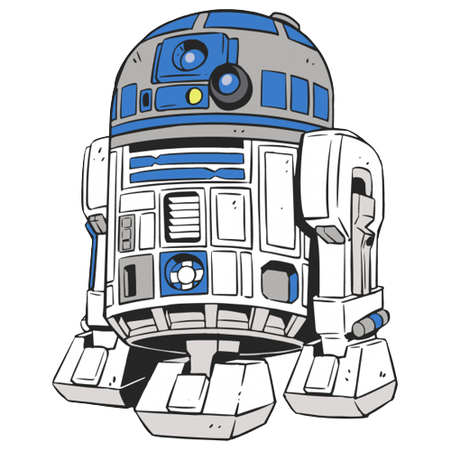
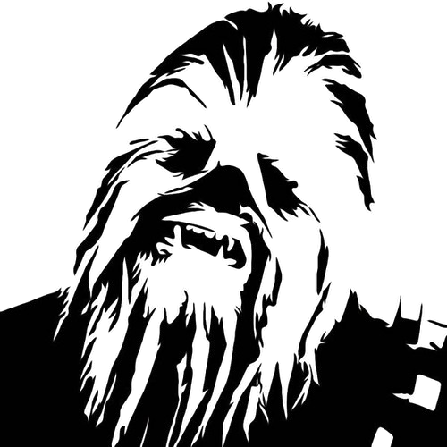
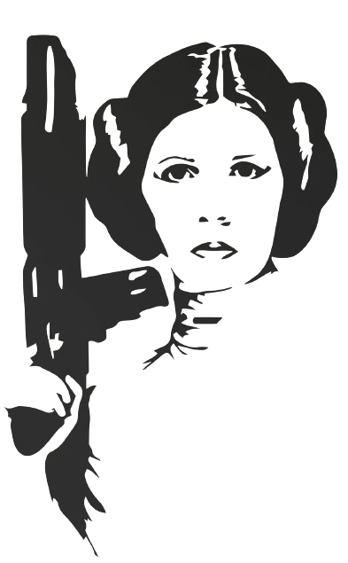

Introduction
BASP-Code is an open-source library gathering PYTHON and MATLAB codes to solve challenging inverse imaging problems in astronomy and medicine. The primary imaging modality of focus is aperture synthesis by radio interferometry in astronomy, with functionality currently being developed for magnetic resoance imaging ans ultrasounf imaging in medicine. The software suite gathers implementations of the most advanced computational imaging algorithms at the interface of optimisation and deep learning theories. The BASP Code algorithms and software are developed at Edinburgh's Biomedical and Astronomical Signal Processing Laboratory (BASP), headed by Prof. Wiaux.
BASP-Code has emerged from previous developments by Prof. Wiaux and collaborators for radio-interferometric imaging, the original optimisation Purify code (whose name echoes the CLEAN algorithm), and the more recent Puri-Psi library featuring first deep learning developments (-Psi standing for "Parallel Scalable Imaging").
If you use BASP-Code, please cite this webpage (http://basp-group.github.io/Puri-Psi/) and relevant publications (see below).
Python
R2D2 - Residual-to-Residual DNN series for high-Dynamic range imaging 
R2D2 a deep learning algorithm designed for large-scale high-dynamic range imaging finds its initial application in the field of radio astronomy. R2D2 is a residual DNN series approach that takes a hybrid structure between a PnP algorithm and a learned version of the matching pursuit algorithm. This structure synthesizes the reconstructed image by progressively summing the outputs of all network components. The dynamic range enhances iteratively as the DNNs utilize the back-projected data residual and the estimate from the previous iteration as inputs.
Latest R2D2 code for RI imaging.
A. Aghabiglou, C. S. Chu, A. Dabbech, Y. Wiaux, The R2D2 deep neural network series for ultra-fast high-dynamic range imaging in radio astronomy, submitted to Astrophys. J., 2024.
researchportal.hw.ac.uk:94082117
A. Aghabiglou, C. S. Chu, A. Jackson, A. Dabbech, Y. Wiaux, Ultra-fast high-dynamic range imaging of Cygnus A with the R2D2 deep neural network series, submitted to Astrophys. J. Lett., 2023.
ArXiv:2309.03291
A. Aghabiglou, M. Terris, A. Jackson, Y. Wiaux, Deep network series for large-scale high-dynamic range imaging, in Proc. IEEE ICASSP 2023, pp. 1–5, 2023.
ArXiv:2210.16060| DOI:10.1109/ICASSP49357.2023.10094843
Matlab
AIRI - AI for Regularisation in Imaging 
Latest AIRI code for RI imaging.
A. Wilber, A. Dabbech, M. Terris, A. Jackson, and Y. Wiaux, Scalable precision wide-field imaging in radio interferometry: II. AIRI validated on ASKAP data , Mon. Not. Roy. Astron. Soc., 522(4):5576–5587, 2023.
ArXiv::2302.14149 | DOI:10.1093/mnras/stad1353
M. Terris, A. Dabbech, C. Tang, and Y. Wiaux, Image reconstruction algorithms in radio interferometry: from handcrafted to learned regularization denoisers, Mon. Not. Roy. Astron. Soc., 518(1):604–622, 2023.
ArXiv:2202.12959| DOI:10.1093/mnras/stac2672
A. Dabbech, M. Terris, A. Jackson, M. Ramatsoku, O. Smirnov, and Y. Wiaux, First AI for deep super-resolution wide-field imaging in radio astronomy: unveiling structure in ESO 137-006, Astrophys. J. Lett., 939:L4, 2022.
ArXiv:2207.11336| DOI:10.3847/2041-8213/ac98af
uSARA - unconstrained “Sparsity Averaging Reweighted Analysis” (SARA) 
Latest uSARA code for RI imaging.
A. Wilber, A. Dabbech, A. Jackson, and Y. Wiaux, Scalable precision wide-field imaging in radio interferometry: I. uSARA validated on ASKAP data, Mon. Not. Roy. Astron. Soc., 522(4):5558–5575, 2023.
ArXiv:2302.14148 | DOI:10.1093/mnras/stad1351
M. Terris, A. Dabbech, C. Tang, and Y. Wiaux, Image reconstruction algorithms in radio interferometry: from handcrafted to learned regularization denoisers, Mon. Not. Roy. Astron. Soc., 518(1):604–622, 2023.
ArXiv:2202.12959 | DOI:10.1093/mnras/stac2672
A. Dabbech, M. Terris, A. Jackson, M. Ramatsoku, O. Smirnov, and Y. Wiaux, First AI for deep super-resolution wide-field imaging in radio astronomy: unveiling structure in ESO 137-006, Astrophys. J. Lett., 939:L4, 2022.
ArXiv:2207.11336 | DOI:10.3847/2041-8213/ac98af
Faceted HyperSARA - Faceted Hyperspectral “Sparsity Averaging Reweighted Analysis” (SARA)
Latest Faceted HyperSARA code for RI imaging.
P.-A. Thouvenin, A. Dabbech, M. Jiang, A. Abdulaziz, J.-P. Thiran, A. Jackson and Y. Wiaux, Parallel faceted imaging in radio interferometry via proximal splitting (Faceted HyperSARA) – II. Code and real data proof of concept, Mon. Not. Roy. Astron. Soc., 521(1):20-24, 2023.
ArXiv:2209.07604 | DOI:10.1093/mnras/stac3175
P.-A. Thouvenin, A. Abdulaziz, A. Dabbech, A. Repetti, and Y. Wiaux, Parallel faceted imaging in radio interferometry via proximal splitting (Faceted HyperSARA): I. Algorithm and simulations, Mon. Not. Roy. Astron. Soc., 521(1):1-19, 2023.
ArXiv:2003.07358 | DOI:10.1093/mnras/stac1521
A. Abdulaziz, A. Dabbech and Y. Wiaux, Wideband Super-resolution Imaging in Radio Interferometry via Low Rankness and Joint Average Sparsity Models (HyperSARA), Mon. Not. Roy. Astron. Soc., 489(1):1230–1248, 2023.
ArXiv:1806.04596 | DOI:10.1093/mnras/stz2117
BUQO - Bayesian Uncertainty Quantification via Optimisation
Latest BUQO code.
A. Abdulaziz, A. Repetti Y. Wiaux, Hyperspectral Uncertainty Quantification by Optimization, in Proc. SPARS Workshop, pp. 1-4, Toulouse, France, July 2019.
researchportal.hw.ac.uk:25005570
A. Repetti, M. Pereyra, and Y. Wiaux, Scalable Bayesian uncertainty quantification in imaging inverse problems via convex optimization, SIAM J. Imaging Sci., 12(1):87-118, 2019.
ArXiv:1803.00889 | DOI: 10.1137/18M1173629
class="highlight"> A. Repetti, M. Pereyra, and Y. Wiaux, Uncertainty Quantification in Imaging: When Convex Optimization Meets Bayesian Analysis, in Proc. EUSIPCO 2018, pp. 2686-2690, Roma, Italy, 3-8 Sept. 2018
researchportal.hw.ac.uk:23009827 | DOI:10.23919/EUSIPCO.2018.8553227
SARA - “Sparsity Averaging Reweighted Analysis”
Latest SARA code for RI imaging.
A. Dabbech, A. Onose, A. Abdulaziz, R. A. Perley, O. M. Smirnov, Y. Wiaux, Cygnus A super-resolved via convex optimization from VLA data, Mon. Not. Roy. Astron. Soc., 476(3):2853-2866, 2018.
ArXiv:1710.08810 | DOI:10.1093/mnras/sty372
S. V. Kartik, R. E. Carrillo, J.-P. Thiran and Y. Wiaux, A Fourier dimensionality reduction model for big data interferometric imaging, Mon. Not. Roy. Astron. Soc., 468(2):2382–2400, 2017.
ArXiv:1609.02097 | DOI:10.1093/mnras/stx531
A. Dabbech, L. Wolz, L. Pratley, J. D. McEwen and Y. Wiaux, The w-effect in interferometric imaging: from a fast sparse measurement operator to superresolution, Mon. Not. Roy. Astron. Soc., 471(4):4300-4313, 2017.
ArXiv:1702.05009 | DOI:10.1093/mnras/stx1775
A. Onose, A. Dabbech and Y. Wiaux, An accelerated splitting algorithm for radio-interferometric imaging: when natural and uniform weighting meet, Mon. Not. Roy. Astron. Soc., 469(1):938-949, 2017.
ArXiv:1701.01748 | DOI:10.1093/mnras/stx755
A. Onose, R. E. Carrillo, A. Repetti, J. D. McEwen, J.-P. Thiran, J.-C. Pesquet, and Y. Wiaux, Scalable splitting algorithms for big-data interferometric imaging in the SKA era, Mon. Not. Roy. Astron. Soc., 462(4):4314-4335, 2016.
ArXiv:1601.04026 | DOI:10.1093/mnras/stw1859
Polarised SARA - Polarised “Sparsity Averaging Reweighted Analysis” (SARA)
Latest Polarised SARA code for RI imaging.
J. Birdi, A. Repetti, and Y. Wiaux, Sparse interferometric Stokes imaging under polarization constraint (Polarized SARA), Mon. Not. Roy. Astron. Soc., 478(4):4442-4463, 2018.
ArXiv:1801.02417 | DOI: 10.1093/mnras/sty1182
J. Birdi, A. Repetti, and Y. Wiaux, Scalable algorithm for polarization constrained sparse interferometric Stokes imaging, in Proc. IEEE SAM Workshop , pp. 465-469, Sheffield, United Kingdom, July 2018.
DOI:10.1109/SAM.2018.8448968
Joint SARA - Joint calibration and imaging with “Sparsity Averaging Reweighted Analysis” (SARA)
Latest Joint SARA code for RI imaging.
A. Dabbech, A. Repetti, R. Perley, O. Smirnov and Y. Wiaux, Cygnus A jointly calibrated and imaged via non-convex optimisation from JVLA data, Mon. Not. Roy. Astron. Soc., 506(4):4855–4876, 2021.
ArXiv:2102.00065| DOI:10.1093/mnras/stab1903
J. Birdi, A. Repetti, and Y. Wiaux, Polca SARA - Full polarization, direction-dependent calibration and sparse imaging for radio interferometry, Mon. Not. Roy. Astron. Soc., 492(3):3509–3528, 2019.
ArXiv:1904.00663 | DOI:10.1093/mnras/stz3555
P.-A. Thouvenin, A. Repetti, A. Dabbech and Y. Wiaux, Time-Regularized Blind Deconvolution Approach for Radio Interferometry, in Proc. IEEE SAM Workshop , pp. 475-479, Sheffield, United Kingdom, July 2018.
DOI:10.1109/SAM.2018.8448891
A. Repetti and Y. Wiaux, A non-convex perspective on calibration and imaging in radio interferometry, Proceedings of the conference on Wavelets and Sparsity XVII, part of the SPIE Optical Engineering + Applications, San Diego, California, United States, 6-9 August 2017.
DOI: 10.1117/12.2273766
A. Repetti, J. Birdi, A. Dabbech and Y. Wiaux, Non-convex optimization for self-calibration of direction-dependent effects in radio interferometric imaging, Mon. Not. Roy. Astron. Soc., 470(4):3981-4006, 2017.
ArXiv:1701.03689 | DOI:10.1093/mnras/stx1267
License
Puri-Psi
Copyright (C) 2018 Yves WiauxThis program is free software; you can redistribute it and/or modify it under the terms of the GNU General Public License as published by the Free Software Foundation; either version 2 of the License, or (at your option) any later version.
This program is distributed in the hope that it will be useful, but WITHOUT ANY WARRANTY; without even the implied warranty of MERCHANTABILITY or FITNESS FOR A PARTICULAR PURPOSE. See the GNU General Public License for more details (license.txt).
You should have received a copy of the GNU General Public License along with this program; if not, write to the Free Software Foundation, Inc., 51 Franklin Street, Fifth Floor, Boston, MA 02110-1301, USA.
Authors
Puri-Psi results from the research conducted within the BASP group (Biomedical and Astronomical Signal Processing) under the direction of Prof. Yves Wiaux.